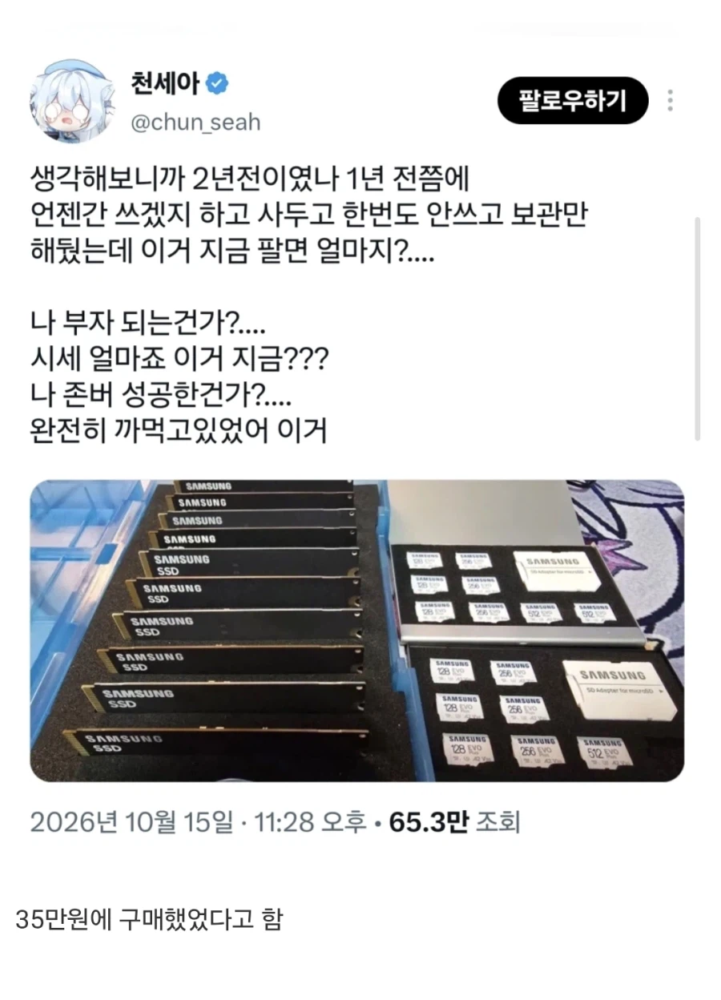

부자다 부자야

부자다 부자야
sd카드도 비싸?
존내비쌈 ㅋㅋ
집에 많은데 잘됐네 ㅋㅋ
낸드도 졸라오름..
참고로 이제 다이소에서 메모리카드 안판다.
호들값떨정도도 아니고 그냥 용돈정도구만
그래서 얼만데
재미 없는 청년
개붕이 용돈 많네
그럼 나에게 용돈으로 300만원만 줘봐
SSD 2테라 하나만
용돈이 우스워?
256sd가 7.8정도 하넹
35 구라임 아님 용량 겁나 작거나
2테라 이상이면 ㅇㅈ
24년도 최 저점일떄 2테라 990pro 기준으로 20이었음.. 그때도 35에 저걸 살수는 없음
낸드도 512기가 micro sd 10정도 했었음.. 나도 그때 사서 아직도 들고 있으니까
와 한우먹자
35치고는 갯수가 너무 많은데?
24년도에 걍 방주용으로 20테라 하드 14테라 하드 cctv용 10테라 두개 사고
ssd도 mx500 4테라 19였나 20에 하나 샀었고 990pro 2테라도 20정도에 샀고
램도 ddr5 32기가 시금치 11.9에 두개 샀었는데
그때가 거의 최 저점이라 알지만 저걸 35에 샀다는건 솔직히 말이 안됨...
물론 지금 저 hdd는 죄다 nas에 물려놨고 컴퓨터에도 ssd 남아돌긴해...
ssd가 전부 128gb라고 해도 35는 말이안되는데?
찾아보니 ssd는 256이고 10개 35에 샀다고 함
요새 256은 줘도 안씀 ㅅㅂ;
당근에 엄청 잘팔리더라 두개 판다니까 줄섬....
얼마받음?
삼성은 7 크루셜은 5.5
하긴 뭐 쓰려면 노트북 같은데는 잘 쓰니까 생각보다 쏠쏠하네
요즘 컴부품 중고 가가격이 미쳐 돌아가고 있어 1060도 아직 7만원에 사가는 세상임
불법적인 일을 하는게 틀림없다
티몬때 할인한다고 쓸데도 없는데 사모은 사람들 있었은데